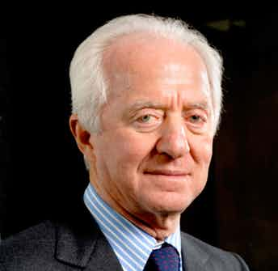
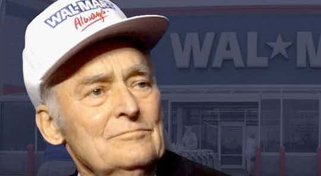

Kirk Kerkorian was growing up during the height of the Great Depression. He had to drop out of school in order to find ways to earn money to help the family. He became a boxer, thus allowing him to bring home some extra cash. He then joined the
Royal Air Force where he became a daredevil pilot, flying over routes in the Atlantic that had a 25 percent casualty rate. From there, he took his chance in craps before finally earning enough money to become a real estate magnate in Las Vegas.
He purchased The Flamingo, before building The International and MGM Grand.

Leonardo Del Vechhio’s dad passed away and his mother could not support the family. He was sent to an orphanage where he grew up. He then worked in a factory where he made molds for auto parts and eyeglass frames, losing a finger in the process.
When he was 23, he opened his own eyeglass frame shop called Luxottica. It is the company behind brands like Ray-Ban and Oakley. He now has a net worth of more than $11 billion.
Maria Das Gracas Silva Foster grew up in the Brazilian town of Morro de Adeus. The town was known to be an extremely poor neighborhood. It only got worse as it eventually became a shantytown. To make matters worse, Foster’s father was an alcoholic.
It was her mother who was supporting the family, but most of the time, it was not enough. Thus, Foster was forced to go out and try to earn additional money by collecting used cans and papers and selling them to junk buyers. But Foster persisted
and eventually became an intern in Petrobras in 1978. Her hard work soon paid off and she became the head of the company’s field engineering department. In early 2012, Foster became the CEO of the company, becoming the first female to head Petrobras.
Howard Schultz comes from a poor family who lived in the projects in Brooklyn. His dad was a truck driver. Fortunately, Schultz excelled in sports and got a football scholarship to the University of Northern Michigan. After graduation, he worked
for Xerox and hanged out in a small coffee shop called Starbucks. He left Xerox to manage Starbucks and helped expand the company from 60 shops in Seattle to over 16,000 outlets around the world.
He was walking on stilts, playing the accordion and eating fire in the streets of Quebec. In 1987, he decided to bring a circus troupe to Los Angeles. With just enough money for a one-way trip, it was definitely a make-or-break trip. And make
it, they certainly did, as they were eventually sent to Las Vegas where it is now known as the Cirque du Soleil. Guy Laliberté is now a billionaire more than twice over.
Oprah Winfrey grew up so poor that she wore clothes made of sacks. She was abused as a child and bounced around from home to home. She was able to turn her life around by studying hard and getting a college scholarship. She then worked in a radio
station before she moved up slowly to television. She would eventually own her own network empire.
Li Ka-Shing fled mainland China with his family for Hong Kong in 1940. When his father passed away when he was just 15 years old, he was forced to quit his studies to help support the family. He started tinkering with plastics until he perfected
the manufacture of plastic flowers good enough for export. He then formed Cheung Kong Industries. His business slowly expanded from plastics to real estate, until such time that he got a foothold in other industries, such as banking, mobile
phones, cement, hotels, retail items, power, airports, steel and shipping.
George Soros was born in Hungary and lived there when the Nazis took over the country. He survived by posing as the godson of a government employee. After the war, the country came under communist rule. Soros was fortunate to escape soon after.
He went to stay and study in London. He worked as a waiter and railway porter to help defray the expenses of his studies at the London School of Economics. He then worked as a salesman in a souvenir shop, even as he pestered managing directors
of merchant banks for possible job openings. When he finally got accepted, he rode it all the way to a billion dollar profit betting against the British currency in 1992.
J.K. Rowling was living on welfare with her daughter. To lull her to sleep, they would spend time walking around the neighborhood. They would then stop by cafes where she would spend time writing a book. The book became the “Harry Potter”
series and it turned Rowling into a billionaire.

It was the height of the Great Depression and Sam Walton was helping his family make ends meet by milking cows, delivering its milk and selling magazine subscriptions. He persevered and eventually graduated from the University of Missouri
with an Economics degree. He took a chance by buying a Ben Franklin variety store in Arkansas. It slowly grew and expanded to what is now known as Wal-Mart.